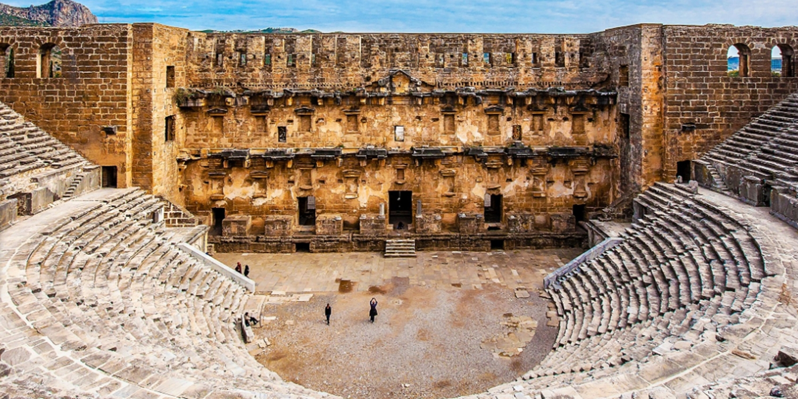

Aspendos Antik Kenti


Mükemmel korunmuş Roma dönemi tiyatrosuyla ünlü Aspendos, antik yapıları ve etkileyici akustiğiyle geçmişin izlerini bugüne taşır.
Perge Antik Kenti

Roma döneminin izlerini taşıyan Perge, etkileyici tiyatrosu, stadyumu ve antik yapılarıyla ziyaretçilerine tarihte bir yolculuk sunar.